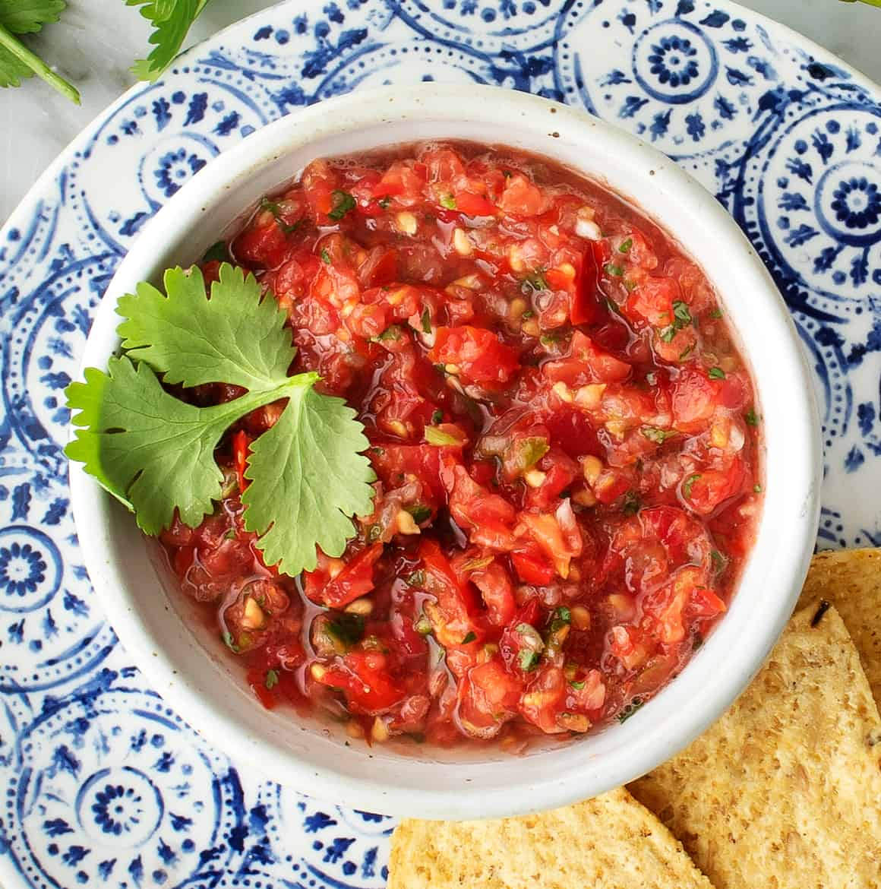

Homemade Salsa

Description
This delicious homemade salsa will keep you coming back for more. Feel free to play around with the heat
levels until you find the right amount of spice for you. I like this salsa with chips, a quesadilla, or
on a burrito bowl. This salsa tastes best after a night in the fridge to let the flavors meld into a
delicious flavor profile that will blow your socks off.
Ingredients
- 4 ripe tomatoes
- 1 red onion
- 3 garlic cloves
- 1 cup cilanto
- 2-3 jalepenos
- 2 tbsp lime juice
- 1 tsp ground cumin
- 1 tsp salt, or to taste
- 1 12 oz can diced fire-roasted tomatoes with chilis
Steps
- Cut up tomatoes into quarters and scoop out those juicy insides (save for another recipes if you can!).
Cut up onion into quarters. Deseed and destem the jalapenos. Put those bad boys into the food processer.
- Add the garlic, cilantro, lime juice, cumin, and salt to the food processor. Use the chop function until
the ingredients are to a size you like. You may need to scrap bits off the side a few times.
- Add the fire-roasted tomatoes. Chop a few more times until well incorporated.
- Give it a taste. Yum or nah? Add jalapenos, salt, cumin, or lime juice as needed. You can even add sugar,
but do so at your own risk.